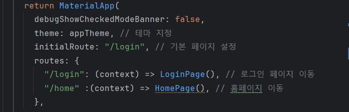
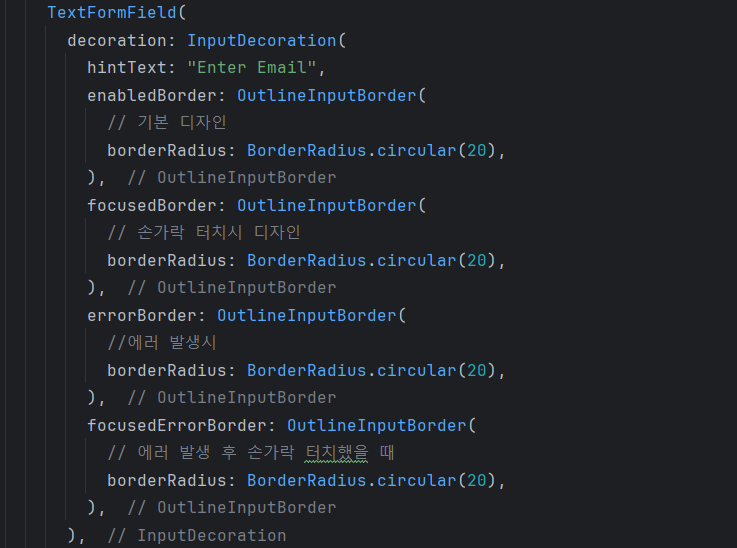
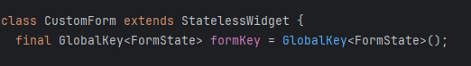
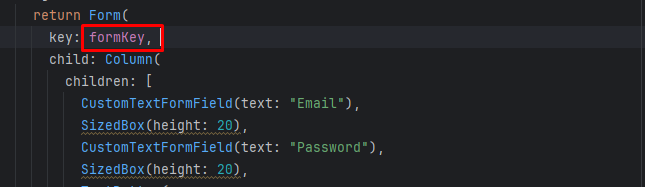
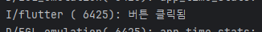
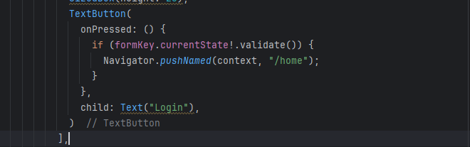
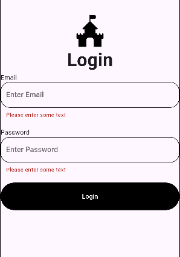

Chapter 07 로그인 앱 만들기
완성 화면


주요 위젯 구성

1. Route 만들기

경로의 이름을 설정한다. initialRoute 를 사용하면 기본 경로를 설정할 수 있다.
2. SVG 파일 넣기
https://pub.dev/packages/flutter_svg


pubspec.yaml 에서 라이브러리를 등록 후 pub get 을 한다.

assets 폴더에 있는 logo.svg 파일을 출력한다.

3. TextFormField 위젯


UnderlineInputBorder 를 사용하면 밑줄만 표시할 수 있다.


OutlineInputBorder 를 사용하면 전체 테두리가 표시된다.

이벤트 발생시의 디자인을 설정할 수도 있다.

GlobalKey는 Form의 상태를 관리하는 데 사용된다. 이를 통해 Form의 상태를 검증하고, Form의 내용을 초기화하거나 저장하는 작업을 수행할 수 있다.

Form 위젯 내부에 자식 위젯으로 TextFormField 를 포함시킨다. Form 위젯의 key 속성으로 GlobalKey를 전달하여 폼 상태를 추적할 수 있다.
5. TextButton 위젯



버튼을 누르면 onPressed 함수가 호출되면서 내부가 실행된다.
6. Navigator 위젯

TextButton을 누르면 Navigator.pushNamed 메서드에 의해 라우터에서 지정한 /home 으로 페이지 이동을 한다.

TextFormField 에서 validator 을 활용해 값이 없을 때의 유효성 조건을 설정한다. 그리고 Form위젯의 validate 를 활용해 유효성 검사를 한다.

TextFormField 에 빈 값을 넣었을 때 오류 메세지가 뜬다.

값이 입력된 상태에서 버튼을 누르면 페이지 전환이 된다.